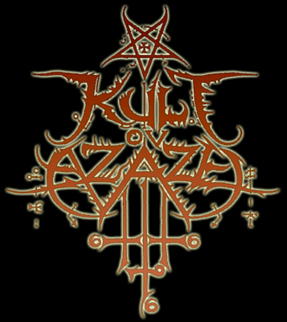
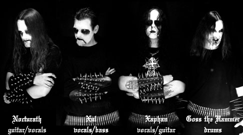
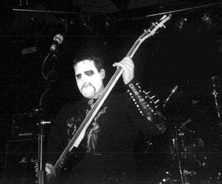
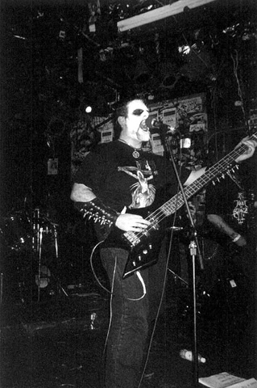
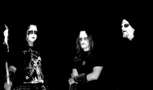

Kult Ov Azazel
Причина интереса CONTRA DEI к группе Kult Ov Azazel заключается в раскрытии взаимосвязи между black metal, как попытки выражения идеи Зла, и самими ликами Зла. Азазель – губитель, Его Власть – в смерти людей. И мы решили узнать, насколько сатанисты, упоминающие это Имя, способны соответствовать Ему.
Ксафан (Xaphan/Zephon) – один из мятежных ангелов, который, присоединившись к Восстанию, предложил сжечь небеса дотла.
Культ Дьявола Азазеля – слишком однозначные слова для того, чтобы употреблять их в каком-либо ином смысле и обозначать ими иную деятельность.
Является ли это претензией или исключительностью – судить вам.
…Жертва всегда стремилась стать палачом. Но ее удел – заклание.
Поджечь небеса смогут лишь избранные, горящие огнем Дьявола…
CONTRA DEI: Расскажи историю создания группы. Познакомь с вашими работами и планами на будущее.
 Xaphan:
Первый этап формирования состава произошел в начале 1999, когда Xul и я
объединили свои интересы и усилия. С тех пор мы являемся основным костяком
команды. Годом позже мы записали наше первое demo MCD “Order of the Fly”,
рекрутировав Von в качестве барабанщика. На смену ему в 2000 мы призвали к
сотрудничеству Hellspawn для работы над записью материала, который вышел в
формате split CD Kult Ov Azazel/Krieg. Летом 2000 был подписан контракт с Arctic
Music на выпуск CD “Triumph of Fire”. Альбом вышел в марте 2001, а место
барабанщика занимал уже Vetis. Как видишь, проблемы с барабанщиками преследовали
нас с самого начала нашей истории.
Xaphan:
Первый этап формирования состава произошел в начале 1999, когда Xul и я
объединили свои интересы и усилия. С тех пор мы являемся основным костяком
команды. Годом позже мы записали наше первое demo MCD “Order of the Fly”,
рекрутировав Von в качестве барабанщика. На смену ему в 2000 мы призвали к
сотрудничеству Hellspawn для работы над записью материала, который вышел в
формате split CD Kult Ov Azazel/Krieg. Летом 2000 был подписан контракт с Arctic
Music на выпуск CD “Triumph of Fire”. Альбом вышел в марте 2001, а место
барабанщика занимал уже Vetis. Как видишь, проблемы с барабанщиками преследовали
нас с самого начала нашей истории.
Пришлось расстаться со многими, поскольку они фактически ничего не вкладывали в группу, а лишь тратили наше время. Но я рад сообщить, что мы все-таки заполучили постоянного барабанщика, а также дополнили наш состав еще одним гитаристом. Наш состав сегодня: Xul (бас, вокал), Xaphan (гитара, вокал), Nocturath (гитара), Goss “the Hammer” (барабаны). Именно в этом составе мы предстанем на нашем следующем альбоме “Occulus Infernum”.

CD: Что побудило и заставило тебя создать музыкальную группу? Какой ты видишь основную цель Kult Ov Azazel?
X: Страстное желание создавать экстремальные сатанинские темные гимны. Основная цель заключена в распространении как можно больше страданий, ненависти и антихристианской пропаганды.
CD: Американская black metal сцена хорошо известна такими именами, как: Judas Iscariot, Krieg, Kult Ov Azazel, Profanatica, Havohej. Появились ли какие-либо новые группы?
X: Много прекрасных групп взросло на этой плодородной почве. Как пример: Inquisition, Thornspawn, Averse Sephira, Infernal Hatred, Bloodstorm, Grand Belial’s Key, Gnostic, Ibex Throne. Список может быть бесконечным.
CD: В продолжение вышесказанному ответь, какие группы ты отрицаешь?
X: Я не хотел бы даже оказать им привилегию, упомянув их здесь.
 CD:
Death metal… Твое отношение к этому стилю? В Америке множество групп подобного
стиля. Как ты сам относишься к нему?
CD:
Death metal… Твое отношение к этому стилю? В Америке множество групп подобного
стиля. Как ты сам относишься к нему?
X: Этот стиль был интересен мне, но сейчас death metal избит. Стиль утратил свою новизну и не имеет развития. Я продолжаю слушать старые банды, которые были популярны в конце 80-х - начале 90-х, и были открывателями этого стиля. Но избегаю покупать альбомы Death metal с 1994. И все же в США есть группы, в которых это осталось…
CD: Твое мнение по поводу ситуации на мировой black metal сцене? Какова причина деградации? Что все-таки заслуживает уважения?
X: Я вижу причину упадка в том, что группы не были до конца искренни в том, что задумывали. Возможно, они просто не соответствовали своим идеям.
Что касается моих пристрастий и уважения, то я назову некоторые имена: старый Mayhem, Darkthrone, Gorgoroth, Corpus Christi, Malleus Maleficarum, Infernal Decay, Setherial, Impiety, Gospel of the Horns, Maniac Butcher, Abigor, Impaled Nazarene, Antaeus, Belphegor, Besatt, Mutiilation, Nargaroth, Ungod, Witchbane и другие.
CD: Участники Kult Ov Azazel – Сатанисты. Как ты определяешь Сатанизм?
X: Для меня сатанизм в основном – философия. Я сатанист в том, что соотношу с Темными Силами то, что известно как человеческая природа и плотская чувственность. У многих людей разное мнение по поводу сатанизма, и они дают разные ответы на вопрос что значит – быть сатанистом? Определение всего этого на самом деле лежит внутри каждого, имеющего к этому отношение. Лишь ты сам точно знаешь, истинный ты сатанист или нет.
CD: Как считаешь, в чем истинная высшая цель Сатанизма? В поклонении Дьяволу?
X: Нет. Поклонение кому или чему-либо, кроме самого себя, – смешно, нелепо и находится ниже уровня идиотизма. Поклоняться Дьяволу – значит поклоняться божеству, созданному христианством, а я не втягиваюсь ни в какую перевернутую христианскую ерунду. Дьяволопоклонник не отличается от поклоняющегося богу, если принять во внимание то, что они оба – продукты христианства. Одни поклоняются сыну христу и небесному отцу, другие отрицают их и обращаются к оппозиции – Дьяволу.
Высшая суть зла есть возвышение над религиозными догмами. Нужно быть самим собой, думать самому вне контроля и манипуляций других. Свержение всех религиозных устоев – в этом высший смысл Зла.
CD: Кто Дьявол для тебя? Что твое сердце говорит о Нем?
X: Мое сердце не говорит мне ничего о дьяволе. Это слово было изобретено недочеловеческими религиями в самом начале времен, для того чтобы негативно обозначить желания и нужды, которые являются лишь естественными. На протяжении длительного времени многие религий, например жидо-христианство, наделили эти желания ужасными чертами и сформировали светскую религию, построенную на страхе и лжи, для того, чтобы держать массы слабыми. Для меня нет такой вещи, как Дьявол, так как я не верю в религию. Нет никакого Дьявола, нет никакого Бога. Есть только жизнь и смерть. Религия не имеет абсолютно никакой ценности.
 CD:
Большинство black metal групп США – сатанисты. В Европе большое распространение
и развитие получило Язычество. В чем, по-твоему, причина всего этого?
CD:
Большинство black metal групп США – сатанисты. В Европе большое распространение
и развитие получило Язычество. В чем, по-твоему, причина всего этого?
X: Я предполагаю – в том, что Америкой правит праворадикальное христианство. Большинство людей, которых можно привести в пример, скажут, что они родились в период по 1987 и выросли в христианских семьях. Они были скованы окружающей их обстановкой с самого рождения. Моя семья не была чрезмерно или даже во всем христианской. Она посещала церковь лишь в особые дни христианских праздников. Вырастая, я смог самостоятельно принимать решения и задавать вопросы по поводу так называемого бога и по поводу его власти и законов, опередивших мое мнение и не имеющих ничего общего с ним. По этой причине я с ненавистью вспоминаю то время, когда мне, будучи ребенком, приходилось вставать рано и идти слушать россказни священника о его вымышленном создателе. С тех самых пор у меня сложилась картина того, что все что создано, имеет своего создателя. Если бог создал человека по образу и подобию своему, то он – его создатель. В свою очередь он так же должен быть создан кем-то и имеет своего создателя. Это просто какой-то бесконечный цикл…
Продолжая свой ответ, скажу, что Европейцы имеют свои корни в язычестве, так же как основатели Америки в христианстве. Поэтому в Европе музыканты в своем творчестве развеивают устоявшиеся религиозные догмы, чтобы вернуться к своим исконным священным старым верованиям. Америка делает это в свою очередь во благо сатанизма или того, что с ним непосредственно связано.
CD: Почему вы выбрали именно такое название? Почему именно Азазель? Почему культ Азазеля? Что вы вкладываете в это название?
X: Азазель в мифологии – демон, ассоциирующийся с войной и разрушениями. Мы, как группа, проецируем эти темы через нашу музыку. Поэтому, мы решили быть известными под именем Kult Ov Azazel.
CD: Продолжая эту тему, как вы видите культ Демона? Скажем, более широко – культ Тьмы? Это – организация, союз братьев Темного Духа, или что-то иное?
X: Если честно, то я совсем не понял твой вопрос, но попытаюсь на него ответить. (!!! Ред.) Мне видится, что индивидуумы, темные духом, собираются вместе и отрекаются/отвергают все религиозные морали и учения и сражаются против мразей, которые пытаются навязать им свои верования, до их полного уничтожения.
CD: Твое отношение к ЛаВею? Его учения можно назвать Сатанизмом? Многие оспаривают их и видят в их основе гедонизм.
X: Я уважаю ЛаВея за его смелость. Он доказал это, бросив вызов христианству и его церкви. Многие говорят, что в его работах нет сатанизма, и что сам он не имеет к таковому ни какого отношения. Я крайне не согласен с таким утверждением. Люди, которые так утверждают, зажаты в тиски христианской догмы. Они изначально слишком погружены в свои сказочные фантазии, чтобы начать понимать, как все есть на самом деле.
CD: На твой взгляд – Сатанизм и его представление ЛаВеем – это одно явление или абсолютно различные?
X: Я уважаю ЛаВея за его вклад, за его книги, так же, как я уважаю других авторов на основании их вклада в литературу. Мне кажется, что сделанное ЛаВеем было большим, чем просто создание философии. Религия требует существование бога/дьявола, тогда как современный Сатанизм не нуждается в них. Созданное ЛаВеем очень отличается от религиозного Сатанизма, который является лишь перевернутым христианством.
CD: Какие отношения (связь) у вас с Церковью Сатаны?
X: Никаких, кроме моей поддержки. И почему многие так часто задают этот вопрос? Церковь Сатаны не имеет никакого отношения к группе, так что это не имеет никакого значения, какие отношения у нас с ними, как не имеют значения любые другие отвлеченные вещи.
 CD:
Все требует своего времени. Согласен ли ты с этим?
CD:
Все требует своего времени. Согласен ли ты с этим?
X: Я полагаю.
CD: Церковь Сатаны внесла значительный вклад в разложение этого мира. Но актуально ли ее существование и ее идеи сейчас? Твои комментарии.
X: Верьте или нет, но я, в отличие от большинства людей, не сижу без дела, размышляя о том, что делает Церковь Сатаны. Я читаю о том, что происходит в Церкви, точно так же, как я делаю это на сайтах, посвященных тяжелой музыке. Но я не сижу без дела, концентрируясь на этом. Все, о чем я забочусь – это группа и то, что группа должна делать. Если они внесли свой вклад в разложение этого мира, разве это не хорошая вещь? Я сказал бы так.
CD: Тебе свойственен экстремизм? Как он проявляется?
X: Я бы сказал, что экстремизм присущ мне. Я всегда это чувствовал на своем жизненном пути, начиная с детских лет до сего дня. Это очень глубокое внутреннее чувство, но я верю, что через творчество группы оно проявляет себя не в малой степени.
CD: Как ты последовал Темному Пути? Почему ты выбрал Тьму? Кто или что олицетворяет для тебя Тьму?
X: Таким я родился. Я не выбирал Тьму. Тьма выбрала меня. Для меня проявлениями Тьмы являются душа и сознание. Если посмотреть внутрь себя, - ты увидишь... Сложно конечно объяснить словами все это. Я думаю, будет проще сказать, что мне помогли книги, музыка, фильмы. Я живу, отвергая всю ту чушь, которую превозносит церковь. Я живу по своим правилам и законам. Kult Ov Azazel – продолжение Темного Пути, на котором продолжается моя жизнь.
CD: Почему и для чего Тьмы выбрала тебя? Для того чтобы заниматься музыкой или ты видишь другие возможности самореализации?
X: Я говорю так, потому что такова вся моя жизнь, меня влекли вещи, которые другие обычно находят непривлекательными. Я имею в виду то, что я нахожу приятным и интересным – то, что другие находят отвратительным и ужасным. Тьма выбрала меня просто потому, что зло всегда вызывало у меня более сильные чувства, нежели добро, если измерять это на шкале категорий добра и зла. Это моя музыка, моя душа и моя жизнь, это то, как я чувствую и думаю. У меня нет других слов, чтобы описать это.
 CD:
Нечеловек. Это тот, кто покинул пределы человеческого бытия. Как бы ты
прокомментировал это? Согласен ли ты с этим? Как ты представляешь себе
уничтожение человеческой сущности?
CD:
Нечеловек. Это тот, кто покинул пределы человеческого бытия. Как бы ты
прокомментировал это? Согласен ли ты с этим? Как ты представляешь себе
уничтожение человеческой сущности?
X: Я не совсем понимаю твой вопрос. Я считаю, что то, о чем ты говоришь, произойдет путем эволюции. После того, как человечество разовьется окончательно, оно полностью себя уничтожит.
CD: Духовное развитие и совершенствование. Что ты можешь сказать об этом?
X: Стремитесь разрушить это. (? Ред.)
CD: Твое отношение к предательству?
X: Медленная мучительная смерть всем предателям!!!
CONTRA DEI: Твоя высшая цель на Темном Пути?
Xaphan: Уничтожить жизнь...
Твои слова в завершение беседы…
Xaphan: Благодарю за интервью. Внемлите тотальной ненависти и разрушьте ваш храм бога!

| Kult Ov Azazel, PO Box 23308, FT. Lauderdale FL, 33307 USA |